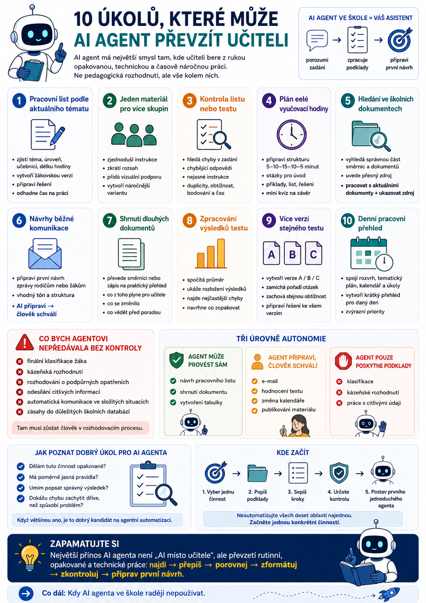

AI agent nemusí být futuristický digitální kolega, který samostatně řídí celý školní den. Největší smysl má tam, kde učiteli bere z rukou opakovanou, technickou a časově náročnou práci. Ne tu pedagogickou, ale všechno kolem ní. Tady je deset konkrétních úkolů, které může dobře navržený AI agent převzít nebo výrazně zjednodušit.

1. Připravit pracovní list podle aktuálního tématu
Místo zadání:
„Vytvoř mi pracovní list na minulý čas.“
může agent pracovat komplexněji.
Například:
Agent může zjistit:
- aktuální téma z tematického plánu,
- jazykovou úroveň,
- používanou učebnici,
- délku hodiny,
- předchozí učivo.
Následně vytvoří:
To už není jednorázové generování textu, ale celý pracovní proces.
2. Přizpůsobit jeden materiál více skupinám žáků
Učitel často vytvoří jeden kvalitní materiál a potom ho potřebuje upravit.
Například:
- zjednodušit instrukce,
- zkrátit rozsah,
- přidat více vizuální podpory,
- rozdělit úlohy na menší kroky,
- vytvořit náročnější variantu.
Agent může dostat základní pracovní list a automaticky z něj připravit několik verzí.
To je mnohem praktičtější než vytvářet každý materiál znovu.
3. Zkontrolovat pracovní list nebo test před hodinou
AI nemusí být jen tvůrcem.
Může fungovat jako revizor.
Před tiskem může zkontrolovat například:
- chyby v zadání,
- chybějící odpovědi,
- nesrozumitelné instrukce,
- duplicity,
- příliš vysokou obtížnost,
- nevyvážené bodování,
- časovou náročnost.
Učitel pak dostane například upozornění:
Úloha 10 je výrazně obtížnější než ostatní.
Při běžném tempu zabere celý test přibližně 50 minut.
Tohle je přesně druh kontroly, kterou člověk večer po desáté snadno přehlédne.
4. Připravit plán celé vyučovací hodiny
Agent může dostat pouze:
„Zítra učím Past Simple v 1. ročníku.“
A připravit:
10 minut – vysvětlení
15 minut – řízené procvičování
10 minut – samostatná práce
5 minut – kontrola a závěr
K tomu může připravit:
- otázky pro úvod,
- příklady,
- pracovní list,
- řešení,
- závěrečný mini kvíz.
Učitel samozřejmě rozhodne, zda plán odpovídá konkrétní třídě.
Agent ale připraví první použitelnou verzi.
5. Vyhledávat ve školních dokumentech
Tohle je jedna z nejpraktičtějších možností.
Místo procházení několika směrnic může učitel položit otázku:
„Jaký je postup při neklasifikaci žáka?“
Agent nejprve vyhledá relevantní části dokumentů.
Potom vytvoří odpověď a ideálně uvede zdroj:
Stejně lze hledat například:
- pravidla omlouvání absence,
- postup při kázeňských opatřeních,
- pravidla klasifikace,
- organizaci zkoušek,
- termíny a povinnosti.
Tady je ale důležité jedno pravidlo:
Jinak jen velmi elegantně hádá.
6. Připravovat první návrhy běžné komunikace
Učitelé píší stále stejné typy zpráv.
Například:
- informace rodičům,
- připomínku termínu,
- omluvu,
- organizační zprávu,
- zápis z akce,
- krátké oznámení žákům.
Agent může podle situace připravit první návrh.
Například:
„Připrav zprávu rodičům, že se středeční exkurze přesouvá na pátek.“
Učitel text zkontroluje a odešle.
Tohle je vhodná oblast pro princip:
Automatické odesílání bych u běžné školní komunikace jako první krok rozhodně nezaváděla.
7. Shrnovat dlouhé dokumenty a informace
Školství miluje dokumenty.
Směrnice, metodiky, zápisy, změny předpisů, nové pokyny.
Agent může dlouhý dokument převést například na:
„Vypiš pouze změny proti předchozí verzi.“
„Připrav mi pět bodů, které potřebuji vědět před poradou.“
To může ušetřit hodně času.
Ale u právních, bezpečnostních nebo zásadních školních předpisů by měl mít učitel stále možnost otevřít původní zdroj.
Shrnutí není náhrada dokumentu.
8. Zpracovat výsledky testu nebo dotazníku
Agent může pomoci také po hodině.
Například dostane tabulku s výsledky testu a připraví:
- průměr,
- rozložení výsledků,
- nejčastější chyby,
- otázky, které dělaly žákům největší problém,
- návrh na opakování.
Učitel může zadat:
„Zjisti, ve kterých tématech třída nejvíce chybovala.“
Agent například odpoví:
To už může mít přímý dopad na přípravu další hodiny.
9. Připravit několik verzí stejného testu
Kdo někdy vytvořil verzi A a B testu ručně, ví, že to není žádná velká intelektuální disciplína.
Je to hlavně otrava.
Agent může například:
- změnit pořadí otázek,
- změnit čísla v příkladech,
- vytvořit paralelní slovní zásobu,
- zamíchat odpovědi,
- vytvořit verzi A, B a C,
- připravit správné řešení ke každé variantě.
Musí ale zachovat:
Právě to by mělo být součástí jeho kontrolních pravidel.
10. Připravit učiteli denní pracovní přehled
Tohle už je skutečně agentní způsob práce.
Před začátkem dne může agent připravit krátký přehled:
Pro 2A máte připravený pracovní list.
U 1B je aktuální téma Unit 4.
U 3C jste minule dokončili pracovní list X.
Ve 14:00 máte poradu.
Do pátku je potřeba dokončit klasifikaci.
To vyžaduje přístup k více zdrojům:
A právě tady už dobře vidíme rozdíl mezi běžným chatbotem a skutečným agentem.
Chatbot čeká na dotaz.
Agent může spojit více informací a připravit pracovní kontext pro konkrétní den.
Co bych agentovi nepředávala bez kontroly
Když vidíme deset možných úkolů, je snadné dojít k závěru:
„Tak mu prostě dáme přístup ke všemu.“
To by byla chyba.
Ve škole existují oblasti, kde by AI měla zůstat pouze pomocníkem.
Například:
- finální klasifikace žáka,
- kázeňská rozhodnutí,
- rozhodování o podpůrných opatřeních,
- odesílání citlivých informací,
- automatická komunikace ve složitých situacích,
- zásahy do důležitých školních databází.
Tam musí zůstat člověk v rozhodovacím procesu.
Tři úrovně autonomie
Prakticky lze jednotlivé úkoly rozdělit do tří kategorií.
Agent může provést sám
Například:
Riziko případné chyby je malé a výsledek před použitím stejně vidí člověk.
Agent připraví, člověk schválí
Například:
Zde je vhodný princip:
Agent pouze poskytne podklady
Například:
AI může něco analyzovat nebo připravit.
Konečné rozhodnutí ale musí udělat člověk.
Největší přínos není „AI místo učitele“
AI agent nemá největší hodnotu tam, kde se snaží dělat pedagogická rozhodnutí.
Největší přínos je často mnohem méně efektní.
Agent může převzít práci typu:
Jsou to desítky drobných činností, které samostatně nezaberou mnoho času.
Dohromady ale dokážou učiteli spolknout podstatnou část pracovního týdne.
Jak poznat dobrý úkol pro AI agenta
Položte si čtyři otázky.
- Dělám tuto činnost opakovaně?
- Má poměrně jasná pravidla?
- Umím popsat, jak má vypadat správný výsledek?
- Dokážu případnou chybu zachytit dříve, než způsobí problém?
Pokud je odpověď většinou ano, je to velmi dobrý kandidát na agentní automatizaci.
Kde začít
Nesnažila bych se automatizovat všech deset oblastí najednou.
Vyberte jedinou činnost.
Například:
„Každý týden vytvářím několik pracovních listů.“
Pak si napište:
- Odkud beru podklady?
- Jaké kroky při tvorbě dělám?
- Co vždy kontroluji?
- Jak má vypadat finální výstup?
A přesně tento proces zkuste převést na prvního jednoduchého agenta.
Až když funguje spolehlivě, má smysl přidat další úkol.
Zapamatujte si
AI agent může učiteli pomáhat například s:
Nemusí přitom učitele nahrazovat.
Nejlepší úkoly pro agenta jsou často ty, u kterých si člověk během práce říká:
„Tohle opravdu musím dělat pokaždé ručně?“
Právě tam bývá největší prostor pro rozumnou automatizaci.
Co dál
Pokud bychom chtěli tuto sérii posunout ještě praktičtěji, logické pokračování je:
Protože až ve chvíli, kdy víme, co agentovi dát, potřebujeme stejně dobře vědět i co mu naopak nikdy nepředat bez rozmyslu.
A zrovna ve škole je tahle druhá otázka minimálně stejně důležitá jako první.